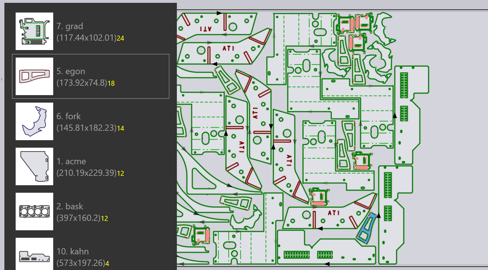

Tryby układania
Silnik układania w TecZone Laser może efektywnie komponować układy na podstawie danych zadania układania. Możesz również wybrać dowolny z ułożonych układów (lub nawet rozpocząć od czystego arkusza) i interaktywnie dodawać do niego detale oraz przesuwać je i obracać.
Automatyczne układanie
Początkowo dodajesz arkusze i detale do zadania układania. Kiedy następnie przełączysz się na zakładkę Layout, układanie jest wykonywane automatycznie. Następnie możesz zmienić listę detali lub zmienić niektóre ustawienia i otrzymujesz opcje ponownego układania detali przy zmieniających się ustawieniach.
Dodawanie kolejnych detali do arkusza
Załóżmy, że dodano kilka dodatkowych detali do zadania układania, a one nie zostały jeszcze ułożone. Aby użyć silnika układania do umieszczenia tych detali na arkuszu, najpierw wybierz zakładkę layout[1], których chcesz użyć (często jest to ostatni arkusz, który prawdopodobnie zostanie wypełniony tylko częściowo). Następnie kliknij ikonę Nest na pasku narzędzi po lewej stronie, a następnie wybierz Pack remaining sheet area automatically. [2]

Pozostające do ułożenia detale są umieszczane na pozostałym obszarze arkusza. Ta opcja nie zmienia żadnego z detali, które zostały już umieszczone na arkuszu, a czasami służy do częściowego ręcznego układania arkusza ręcznie, a następnie zadaniowania silnika układania do wykańczania reszty gniazda. Poniższy rysunek przedstawia nowo dodane detale z żółtym odcieniem. Widać, że starsze detale nie zostały przesunięte:

Zmiana układu – pozostałe arkusze
Jeśli nie musisz utrzymywać pozycji starszych detali, możesz uzyskać lepsze wyniki, zadaniując silnik układania do zmiany układu całego arkusza. Wybierz*Rearrange to create a remainder sheet*, a TecZone Laser usunie wszystkie detale na arkuszu, próbując wyczyścić pozostałą prostokątną część arkusza po prawej stronie, która może być wykorzystana jako surowiec na przyszłe gniazdo.

Można zauważyć, że powyższy arkusz ma te same detale, co poprzednio, ale jest upakowany ciaśniej, umożliwiając odcięcie pozostałej części arkusza do użycia.
Zmiana układu – użyj pełnego arkusza
Jeśli pozostała część arkusza jest zbyt mała, aby była użyteczna, warto zadaniować silnik układania, aby nieco luźniej ułożył arkusz, nadal wykorzystując wszystkie detale na arkuszu, ale zwiększając odstępy między detalami, by wykorzystać całą powierzchnię arkusza. Można to zrobić, wybierając Rearrange to use full sheet z menu:

Ręczne układanie
Otwórz układ do edycji w zakładce Układy panelu zadań lub otwierając plik .fxlyt, który został wcześniej zapisany.
Dodawanie detali
Możesz dodać detale do układu, klikając przycisk Add na lewym pasku narzędzi. Wyświetlona zostaje lista wszystkich części w zadaniu układania:

Kliknięcie części z listy dodaje ją do arkusza (silnik układania służy do znalezienia optymalnej pozycji dla części, ale można to później zmienić). W ramach opisów detali stosuje się różne kolory dla różnych znaczeń wymienionych poniżej:
|
12 ułożonych detali (wymagana ilość) |
|
O dwa detale ułożone mniej niż jest to wymagane |
|
Wymaganych 18 części, 20 ułożonych (+2) |
|
Wymagana ilość 24 ułożonych detali |


Gdy przesuwasz kursor myszy nad detalami na liście detali, TecZone Laser natychmiast oblicza prawidłowe położenie detalu i wstępnie wkłada go do arkusza w kolorze niebieskim, dzięki czemu możesz ocenić, czy będzie to dobre dopasowanie. W związku z tym możesz szybko umieścić kilka detali na arkuszu, po prostu przesuwając nad nimi kursor myszy i klikając.

| Po umieszczeniu części na arkuszu można je przesunąć, obrócić lub powtórzyć ich wybór za pomocą Panelu rozmieszczenia. |